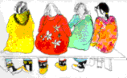
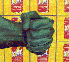
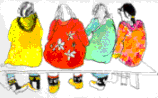
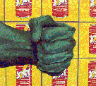

Volume 1
Issue 3


An excerpt from Rob Allen's new novel Napoleon's Retreat
Plus new fiction from Cheryl Armour and Catherine Kidd

Sharon Sutherland
Art from the Arctic
Barry Spacks: Poems Available
Ernest Slyman: A few more poems
Lance Blomgren: From Practice

Ed Ward's Musings from Berlin
The Black Crusader
by Bernard MacNab
The best of the Guestbook
I never thought I'd find a place where my bunny talk made sense to anyone
else but me and my husband. We have several bunny visitors in our home.
Carl, the elder bunny who like gin and tonics and Patsy from Abfab, then
theres Frederick who came over from Amsterdam and loves sausage and
his woman Francesca, who sleeps all day and night, but will get up for cake
and wine. Our smaller bunnies, Johann and Josephine are from Bavaria.
We need to watch Johann in traffic, hes nuts, and Josephine has a fetish
with Zima. Her ears are wild like lightning bolts! These guys are cool. We
always have a party in our home. Bunnies are god.
Lori Deinhammer (California)
An excerpt from Rob Allen's new novel Napoleon's Retreat
Plus new fiction from Cheryl Armour and Catherine Kidd

Sharon Sutherland
Art from the Arctic
Art from the Arctic
Barry Spacks: Poems Available
Ernest Slyman: A few more poems
Lance Blomgren: From Practice

Ed Ward's Musings from Berlin
The Black Crusader
by Bernard MacNab